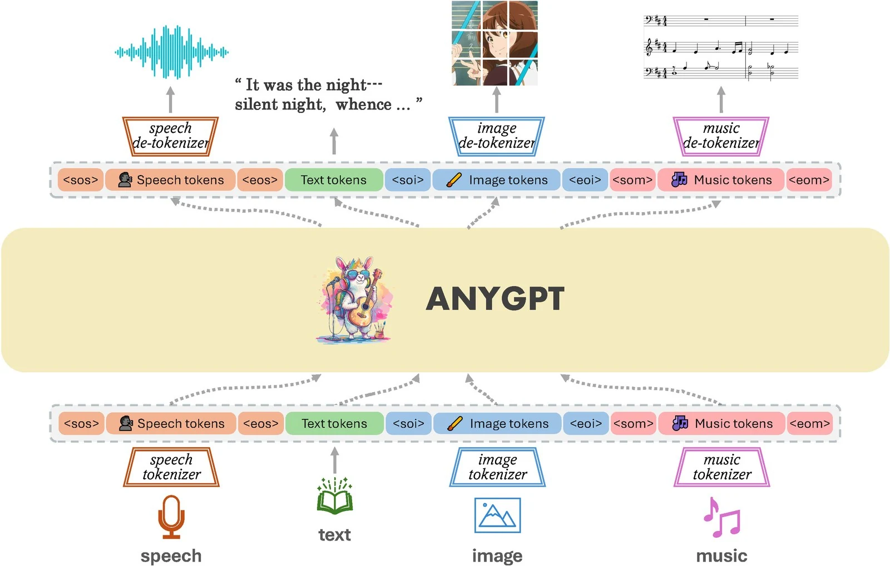
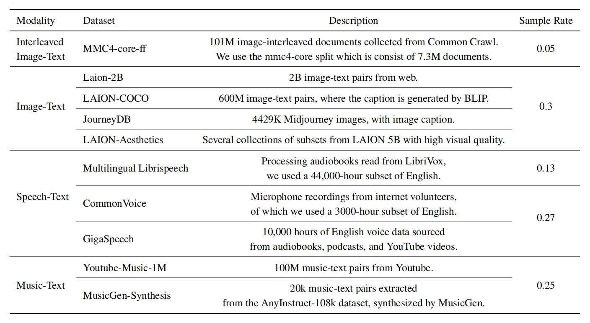
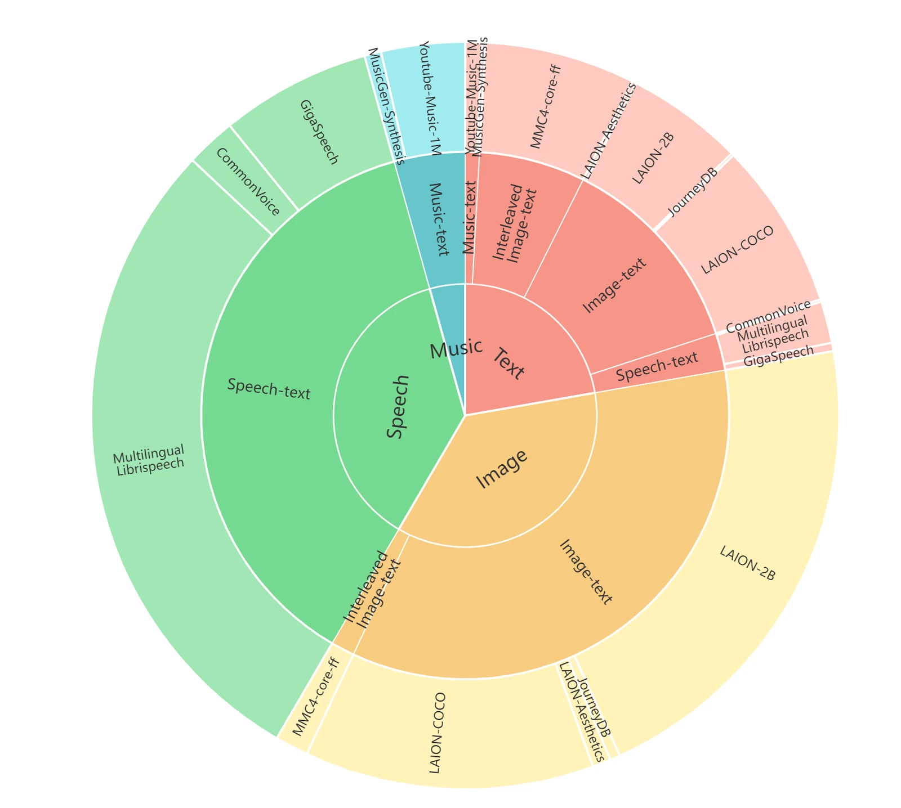
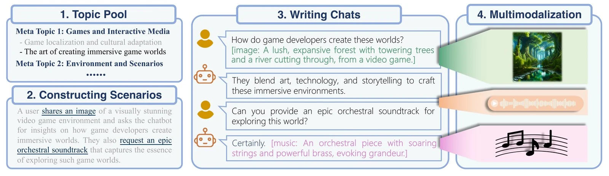
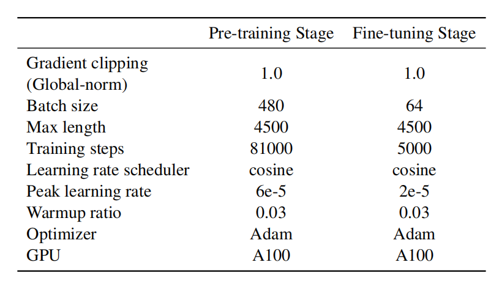
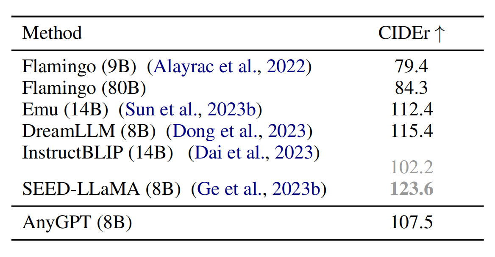
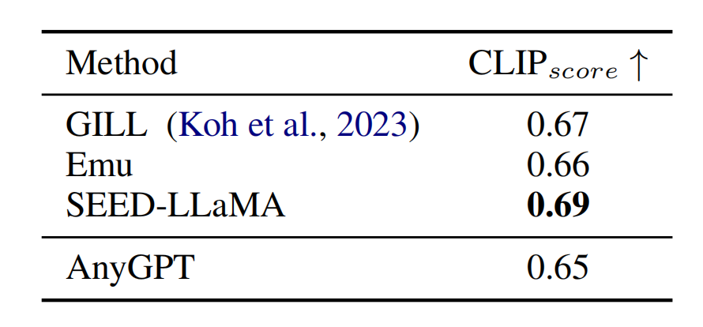

Introduction
Large Language Models (LLMs), trained on vast amounts of text data through the Decoder-Only Transformer architecture and Next Token Prediction training obejective, have not only mastered various NLP tasks but have also developed new capabilities such as In-Context Learning and Chain-of-Thought. However, some predict that the high-quality textual data on the internet will be exhausted in the coming years, and existing LLMs have yet to achieve our vision for General Artificial Intelligence (AGI). The internet encompasses not just text but also images, audio, video, and other multimodal data, making the endowment of multimodal capabilities to large language models a hot research direction.
AnyGPT proposes a generative training paradigm that converts data from all modalities into a unified discrete representation, using the Next Token Prediction task for uniform training on LLMs. From the perspective of compression as intelligence: when the quality of the Tokenizer is high enough, and the perplexity (PPL) of the LLM is low enough, it may be possible to compress massive amounts of internet multimodal data into the single model, and emerge abilities not found in pure text LLMs. Based on the original GPT structure and multimodal discrete representations, AnyGPT unifies text, speech, image, and music modalities, achieving interconversion between any combination of modalities.
Our main contributions are as follows:
Model
Our interest lies in using large language models (LLMs) to achieve generation from any modality to any modality. To accomplish this, we propose a unified framework. As shown in Figure 1, the framework consists of three components: (1) multimodal tokenizers, (2) the core multimodal large language model, and (3) multimodal de-tokenizers. The tokenizer converts continuous non-text modalities into discrete tokens, which are then combined into multimodal interleaved sequences. The language model is then trained on these sequences using the Next Token Prediction Loss. During inference, multimodal tokens are decoded back to their original representations through corresponding de-tokenizers. To enhance the quality of generation, multimodal enhancement modules can be employed for post-processing the generated results, such as voice cloning or image super-resolution. In the following sections, we will detail each component.

Tokenizer
Image Tokenizer We employ SEED
Speech Tokenizer We utilize the SpeechTokenizer
For instance, a 10-second audio will be converted into a 500×8 matrix, containing 500×1 semantic tokens and 500×8 acoustic tokens. In AnyGPT, a large language model (LLM) is used to model the semantic tokens, while a voice cloning model supplements the remaining paralinguistic information. Thus, the size of the speech vocabulary in LLM is equivalent to the size of a codebook, which is 1024.
Music Tokenizer We use Encodec
Multi-modal Large Language Model
To incorporate multimodal discrete representations into pre-trained LLMs, we extend the vocabulary by adding tokens for each modality and expanding the corresponding embeddings and prediction layers, with newly added parameters initialized randomly. The tokens from all modalities form a new vocabulary, the size of which is the sum of tokens from all modalities.
With tokenizers specific to each modality, we can compress multimodal data into discrete token sequences. The
language model is trained on this sequence using the Next Token Prediction task, enabling the core LLM to
naturally unify tasks such as multimodal perception, understanding, reasoning, and generation in an autoregressive
manner.
We initialize the parameters of the LLM with LLaMA-2 7B
Multimodal De-tokenizer
The generation of high-quality multimodal data, including high-definition images, and high-fidelity audio, presents a substantial challenge. These data typically necessitate a large number of bits for accurate representation, resulting in long sequences which is particularly demanding for language models, as the computational complexity increases exponentially with the length of the sequence. To address this issue, we adopt a two-stage framework for high-quality generation, including semantic information modeling and perceptual information modeling. At the semantic level, an autoregressive language model generates multimodal token sequences, which are then transformed into high-fidelity multimodal content by non-autoregressive models, striking a balance between performance and efficiency.
Specifically, we employ SEED tokens, aligned with the diffusion latent space, for visual-language modeling. Semantic-level SEED tokens are decoded into high-quality images by a Diffusion Model, which is renowned for its superior generation capabilities. For speech, we utilize the SoundStorm model to generate acoustic tokens, decoded into raw audio data. For music, we filter high-frequency details using Encodec tokens and reconstruct them into high-fidelity audio data through the Encodec decoder. This framework enables AnyGPT to significantly reduce the length of speech sequences while ensuring high-quality generation of multimodal data.
Training
Pretraining Data
Achieving alignment across various modalities requires training data where these modalities are aligned, which is often scarce. To address this, we constructed a multimodal alignment dataset composed of bimodal alignment data centered around text, where text serves as an bridge for aligning various modalities. By aligning different modalities with the text modality, alignment across any modality is established. Table 1 shows all the datasets used for pretraining and their sampling rates, while Figure 2 illustrates the specific token proportions. For modalities with smaller amounts of data, oversampling is employed during training to ensure balanced representation of different data types within a batch.


Multimodal Instruction Following Data
Natural human-machine interaction should allow users and conversational agents to exchange information using various modalities. However, the increase in the number of modalities also complicates data collection, and there is still a lack of large-scale instruction datasets containing more than two modalities. This imposes significant limitations on the development of models capable of understanding and generating various multimodal interleaved dialogues.
To address this limitation, we designed a method to construct dialogue data integrated with multiple modalities using generative models, resulting in a dataset called AnyInstruct-108k, which contains 108k multi-turn dialogues. As shown in Figure 3, the specific data synthesis process consists of two stages. In the first stage, dialogues describing multimodal elements in textual form are synthesized. In the second stage, models such as text-to-image, text-to-speech, and text-to-music are employed to convert the textual descriptions of multimodal elements into corresponding modalities. To ensure sample diversity, the first stage is divided into three specific steps:
- Manually selecting meta-topics and refining them into multiple specific topics using models to obtain a pool of topics;
- Expanding topics into dialogue scenarios that describe the actions of users and robots in the dialogue, where actions are determined by combinations of instructions;
- Generating complete dialogues based on scenario descriptions, where images and music are represented by text descriptions with specific markers.
In the second stage, we use state-of-the-art multimodal generative models to convert the text descriptions in the
dialogue into multimodal content. We employ OpenAI's DALL-E 3

After filtering, we obtained a dataset consisting of 108k multimodal interleaved dialogues, including approximately 205k images, 503k voice recordings, and 113k music tracks. Additionally, we enhanced the dataset by extracting content suitable for reading from existing text instruction datasets and obtaining 100k audio dialogues through text-to-speech synthesis.
Training
We construct multimodal sequences from multimodal data using various templates. Each non-textual modality content is identified by special markers placed at the beginning and end. Typically, paired data includes a non-textual modality (X) - such as image, audio, or music - along with its corresponding text. We prompt OpenAI GPT-4 to generate hundreds of bidirectional instruction pairs, each being X to text or text to X, for example, "Please generate an image based on the provided text." Given a token sequence (S) and associated text (T), we randomly select a generation direction and an instruction (I) from our pre-established pool to form a triplet (I, S, T). Then, depending on the generation direction, we merge this triplet into a sequence using templates.
[Human]: {I}.{S}<eoh>。[AnyGPT]: {T}<eos>.
Or its variant [Human]: {I}.This is input:{T}<eoh>。[AnyGPT]: {S}<eos>.
For multimodal interleaved data such as web pages with image-text pairs, they naturally form sentences, so we directly replace them with the corresponding non-text content. As most image and music data come from the web, there may be some noise that could affect the quality of multimodal generation. Therefore, after the first-stage pretraining, we selectively use high-quality datasets - JourneyDB and LAION-Aesthetics for text-to-image generation, and LAION-COCO for image-to-text generation. For music data, we integrate music-description pairs from the AnyInstruct-108k dataset. The remaining data remains unchanged, and we continue additional 4000-step pretraining on the model.Table 2 reports the detailed training settings and hyperparameters of AnyGPT.

Evaluation
Cross-Modal Tasks
To test the alignment between different modalities during pretraining, we evaluate the basic abilities of the pretrained AnyGPT base model on multimodal understanding and generation tasks. Specifically, we test the "text-to-X" and "X-to-text" tasks for each modality, where X is image, music, and speech, respectively. To simulate real-world scenarios, all evaluations are conducted in a zero-shot setting, meaning AnyGPT is not fine-tuned or pretrained on downstream training samples. This requirement demands the model to generalize to unknown testing distributions, showcasing the generalization capabilities of AnyGPT across different modes. Evaluation results demonstrate excellent performance of AnyGPT in various multimodal understanding and generation tasks, as shown in the specific experimental results below.
Image Understanding We evaluate the model's image understanding capability through the image captioning task. Results are presented in Table 3. We use MS-COCO 2014 as the evaluation dataset and follow previous work's Karpathy-style test set split.

Image Generation As shown in Table 4, we evaluate image generation using the text-to-image task. Consistent with previous work, we randomly sample 30k images from the MS-COCO validation set and use the CLIP Score as the evaluation metric. This metric computes the similarity score between the generated image and its corresponding real image text description using CLIP-ViTL.

Speech Recognition We conduct speech recognition on the LibriSpeech test-clean set and calculate the Word Error Rate (WER) to evaluate the speech recognition capability. Results are shown in Table 5.

Zero-shot Speech Synthesis We evaluate the speech generation capability through zero-shot Text-to-Speech (TTS) on the VCTK dataset, calculating the Speaker Similarity and Word Error Rate (WER) as metrics. Results are shown in Table 6.

Music Understanding and Generation We evaluate the music understanding and generation capability using the MusicCaps benchmark and CLAP Score as the metric, which describes the similarity between the generated music and its corresponding text description. Results are presented in Table 7.
For the evaluation of music captioning, we found that existing objective evaluation metrics may have limitations in expressing the performance of the music captioning task due to the diversity and subjectivity of music, as well as the different opinions among individuals. Only specific music types and instruments have recognizable unique features. To ensure objective evaluation, we compare the CLAP Score of <music, real caption> pairs and <music, generated caption> pairs.

Any-to-Any Multi-modal Conversations
After fine-tuning on AnyInstruct-108k, AnyGPT demonstrates the ability to engage in conversations across any modality. It can understand instructions composed of text, speech, images, and music, and select appropriate modalities for response. For more examples, please refer to our project page.
Conclusion
In this work, we introduced AnyGPT, an Any-to-Any multi-modal language model that leverages discrete representations to handle various modalities including speech, text, images, and music. The discrete multi-modal representation facilitates seamless integration of new modalities—akin to adding a new language—without the need to change the existing LLM architecture or training paradigm. To enable the model to handle arbitrary combinations of multi-modal inputs and outputs, we synthesized the first large-scale Any-to-Any multi-modal instruction dataset, AnyInstruct-108k, containing finely interleaved multi-turn conversations spanning various modalities. Experimental results demonstrate promising performance of AnyGPT across various cross-modal tasks and showcase impressive Any-to-Any multi-modal conversation capabilities, validating that discrete representations can effectively and conveniently unify multiple modalities within a unified large-scale language model.
Limitations and Future Work
Any-to-Any Multi-modal LLM Benchmark: Benchmarking for Any-to-Any multi-modal LLMs is emerging as a research hotspot. However, the lack of dedicated benchmarks evaluating the multi-faceted capabilities of such models underscores the urgent need to develop comprehensive evaluation benchmarks.
Stronger LLMs: While training large multi-modal models using discrete representations is relatively stable compared to single-modal ones, there still may be higher training losses, impacting performance. Improvement strategies may include employing larger LLMs and tokenizers, or adopting architectures like Mixture of Experts (MOE).
Enhanced Tokenizers: In multi-modal LLMs, the quality of tokenizers directly influences the model's comprehension and generation abilities. Tokenizers can be improved in various ways, including optimizing codebook training and achieving more uniform multi-modal representations.
Expanded Context: Multi-modal content such as images and audio often involves long sequences, resulting in greater training difficulty and higher data requirements. For multi-modal conversations, longer contexts can increase the number of dialogue turns, enhancing interaction depth and complexity.